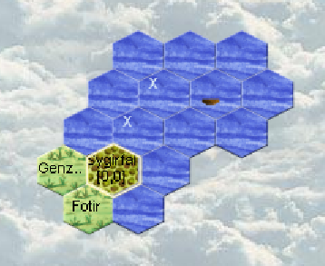

Aquarians: Runde 2
Turn 2
First boat sent
All mages are T1

Everything went as planned except for one entertainer unit that didn't leave the boat. I forgot the LEAVE order!
No major consequences, it's an opportunity that will need to be exploited.
No visits from potential neighbors.
No coasts on the horizon.
The turn is simple, we have no more silvers to spend:
Everyone who can brings back money, the boat explores, we start building the second boat. The future captain learns entertain, it can always be useful.
Mages
ALL mages will cast a spell to earn money.
In Gwryrrd it's Cattle Healing
ATTENTION: Make sure to get into the habit of setting the spell level. Otherwise it's a cast at the mage's level.
CAST LEVEL 1 "Cattle Healing"
Some will tell you to be cautious. That's wise, but we don't yet have the means to be.
Each mage has a 20% fumble risk.